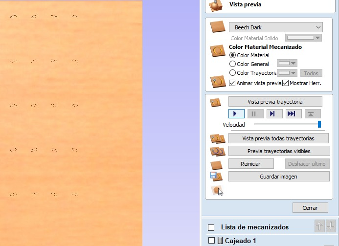
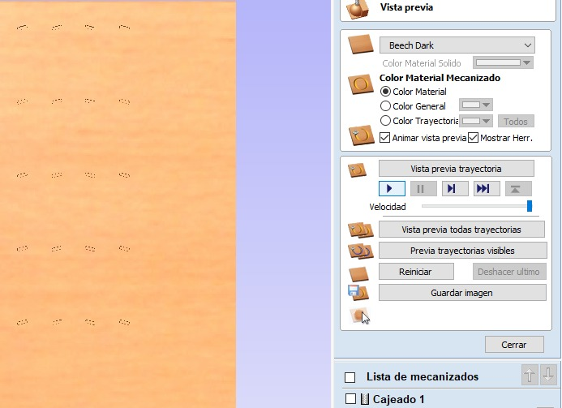

7. Computer Controlled Machining
This week consisted of machining something big on the CNC router, I decided to make a not-so-conventional bookshelf.
The CNC router that I used this week was the generic one made by the IBERO Puebla university, which within its dimensions measures: 3x1.8x1.7 meters. You can find more information about it here in the group assignment.
Some of the important points that I gather from the group assignment are that these machines pose a lot of risk, so it's important that they are always monitored while they are running to prevent accidents, and to always know where the emergency stop button is located in case of any accidents. Another important aspect is that with routers, you can cut materials such as acrylic, aluminum, copper, tin, various types of wood, MDF, nylon, non-ferrous metals, resins, etc. It's important to mention that each tool has a certain speed that must be calculated properly to avoid accidents. On the other hand, concerning design rules, it's necessary to perform either a Dog-bone or a T-bone, this is because the tool is circular and won't allow the pieces to fit together, which can be solved by sanding that part, but it'll be easier if a machine does it. Lastly, the part about placing tabs is very useful because when cutting with the CNC, it won't move since there will still be some material holding the piece, you just have to avoid placing them in inconvenient locations to remove, such as corners and tabs.
Research
The CNC router, which stands for Computer Numerical Control, is a revolutionary technological tool in the field of manufacturing and design. This machine combines the precision of computerized control with the versatility of a cutting tool, allowing for the creation of three-dimensional pieces with unprecedented accuracy and detail. From the manufacturing industry to DIY projects at home, the CNC router has transformed the way ideas are materialized in the modern world.
Design
For the first part of the design, I searched for ideas on the internet and found the design for a not-so-conventional bookshelf. The first thing I did was to attempt to draw the pieces I would need in order to construct the bookshelf. Subsequently, I made an assumption regarding measurements, trying to make it a considerable size that could fit within the boards provided in the course, which measure 1200 x 2440 mm and have a thickness of 15 mm.
The program I used to create the pieces was SolidWorks.
How I made my CAM-thoolpad
To make my CAM toolpad, I used the VCarve program, where as can be seen, the first step is to select the option "create a new file"
One must set up the material size, both width, height, and thickness, as well as its working unit and the origin from which the CNC will be cutting.
For the next part, I imported the files I used:
From the file Lateral.DXF, you will use 4 pieces, from Middle.DXF only 1 piece, from Second.DXF 2 pieces, and from Third.DXF also 2 pieces. The reason for repeating the pieces is that they are very symmetrical, so by placing them in the correct location, the bookshelf will be perfect.
In order to move, scale, or rotate the figure, we must ensure to select all its vectors to prevent any parts from not moving and causing errors. Additionally, we have the tool to Join open vectors, in order to avoid any pieces that have not been completely closed.
In the toolpath section, there is a part where I mainly used the symbols that are circled.
An important aspect to consider is that all cuts made to fit should have TBones or DogBones to ensure that the material doesn't require nails or glue. This is because the circular tool doesn't allow for straight cuts as shown in the DXF. In this case, I specified that they be with a radius of 4 mm, as it approximated the size of the tool.
The first toolpath I created was for the recesses in the Lateral.dxf, where the shelves would be held to prevent any movement. You can also see the tool used: End Mill (0.25 inch), spindle speed: 16000 rpm, feed rate: 4500 mm/min, plunge rate: 900 mm/min. It's important to specify that I used a depth of 12 mm because I didn't want the holes to be visible.
After that, in the same tab, further down, we can find the calculate button, allowing us to create the toolpath, and it will open a preview of its simulation.
 

For all the other pieces, meaning the exterior cuts, I did use a depth of 15.3 to ensure that if there was any irregularity in the board or the spoil board, it would cut through the material completely. It's also necessary to specify the tool and that the cut will be performed on the outside to avoid making the pieces smaller. Additionally, I added tabs in smooth areas to make their removal easier and prevent the material from shifting during cutting. Another important point is that I made the cut in at least 5 passes to avoid damaging the tool.
And finally, we click on calculate in the same section at the bottom.
You can see the estimated machining time, which in this case was around 1 hour, 14 minutes, and 30 seconds.
To conclude, I used the save toolpaths button. It's important to ensure that all are selected so that only certain ones aren't saved. In my case, for the router I used, the post processor for G-code was March2/3 Arcs (mm)(*.txt).
How I made something big
The first step was to search for the AR2400 program and open the document Librero.txt, which already contains the CNC's G-code. We also placed the tool and made sure that we had the necessary safety measures in place (safety glasses, face mask, boots, lab coat). The material to be cut was also secured onto the sacrificial bed, ensuring that the tool wouldn't touch the nails and cause damage, as this could be dangerous. It's important to set the Z 0 at a location where the sacrificial bed is not too worn out so that it cuts completely, and also ensure that the X and Y are positioned at the corner of the material.
Subsequently, the tabs remaining from the material should be sanded, and then the furniture can be assembled using a hammer. No nails, no glue.
Problems and how I fixed them
One of the issues I encountered was when trying to assemble the legs of the bookshelf, as I didn't realize that by making them all on the same side and avoiding the chamfers from being visible, I should have rotated two of the legs in VCarve. Since the material was 15 mm thick and the chamfer was 12 mm deep, I couldn't fit the shelves. So, with the help of a flathead screwdriver and hammer, I managed to complete the perforations.
Another important point that was highly recommended to me was to specify a depth of 15.3 when making the cut, so that if there were any warping, it would still cut through. I also received advice to cut the material into 5 equal parts to avoid damaging it.
I also encountered the problem of not having enough space to place the screws to secure the board, so it was necessary to try to calculate that the tool wouldn't hit the nails. When the tool got very close to the last nail, I stopped the cut, but when trying to resume the cut from there, it didn't behave as expected. So, my solution was to only include in VCarve the pieces that hadn't been cut yet, allowing me to finish the furniture.
EXTRA
Something I did previously was a house for my Chihuahua dogs, a kind of apartment-style, but that was with 12 mm MDF. The process for its creation was very similar to the one explained for the bookshelf. If you want to get the downloadable files, you will find them in a zip file in the downloads area, although you will find two G-codes because I couldn't fit everything I needed on a single sheet of material.